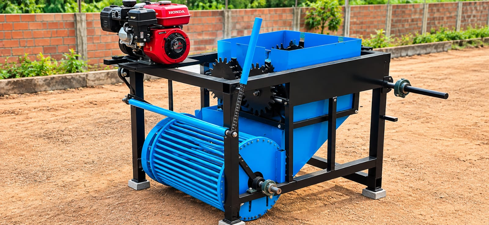
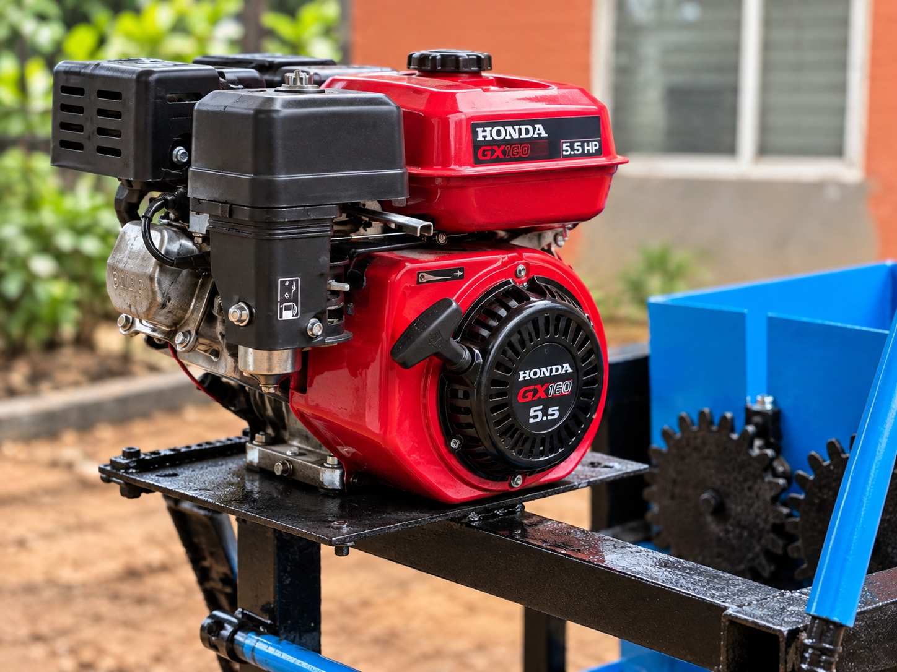
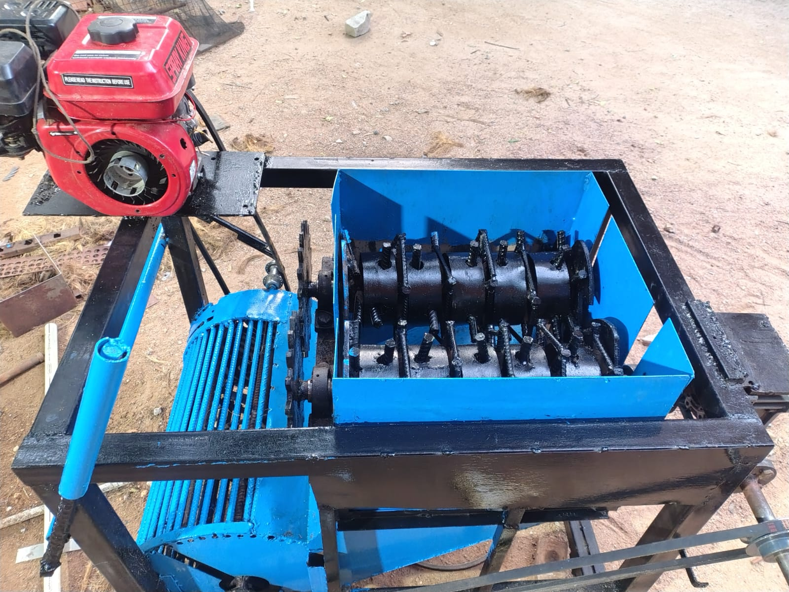
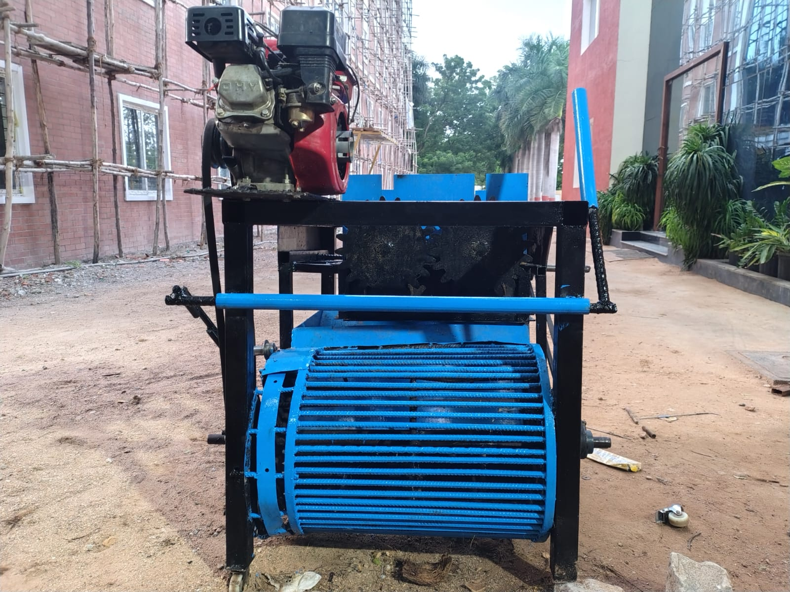

Engineered to transform coconut husk waste into valuable cocopeat and coir fibre through an efficient crushing and separation process.
View different sides of the COCONOVA processing machine and inspect the major processing components.

Use the controls to zoom into the machine and switch between different views.
The COCONOVA machine is designed to process coconut husk through crushing, separation and collection. The system produces two useful outputs: cocopeat and coir fibre.
Every major section of the machine contributes to the processing cycle.

01Provides the mechanical power required to operate the processing system.

02The rotating mechanism breaks down the coconut husk into smaller material.

03The rotating drum works with the separation system to classify the material.
Processed cocopeat and coir fibre are discharged separately for collection.
A simple processing flow converts coconut husk waste into two valuable natural outputs.
Coconut husk is manually fed into the feeding chamber.
Rotating blades crush and break the coconut husk.
The mesh system separates finer cocopeat from coarser fibre.
Cocopeat and coir fibre are discharged separately.
The machine concept is designed around a straightforward processing sequence suitable for converting coconut husk waste into useful natural products.
A closer look at the physical machine and its processing components.
Natural products. Powerful solutions.
Back to COCONOVA